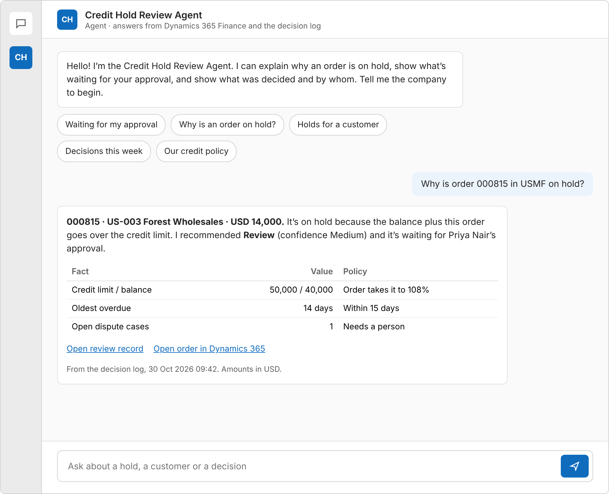
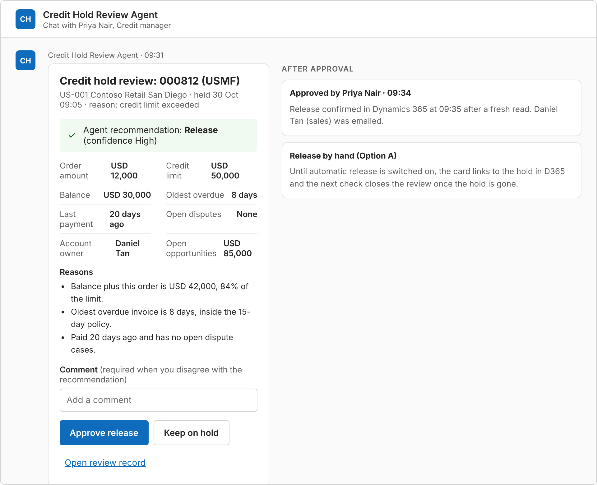
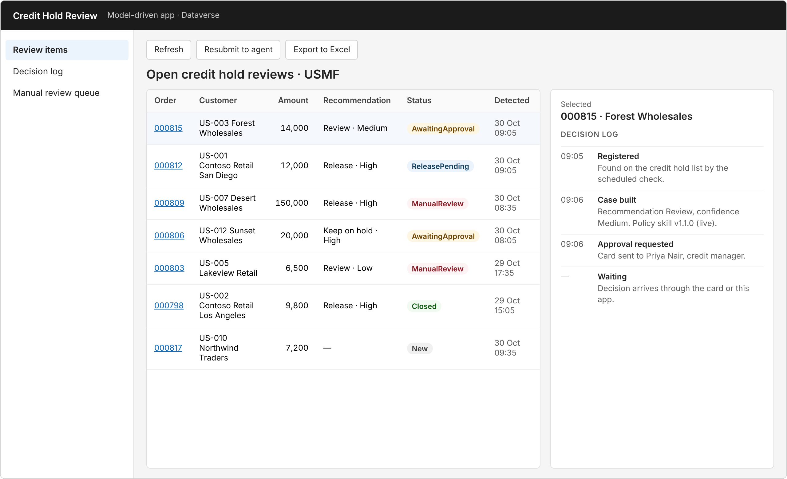
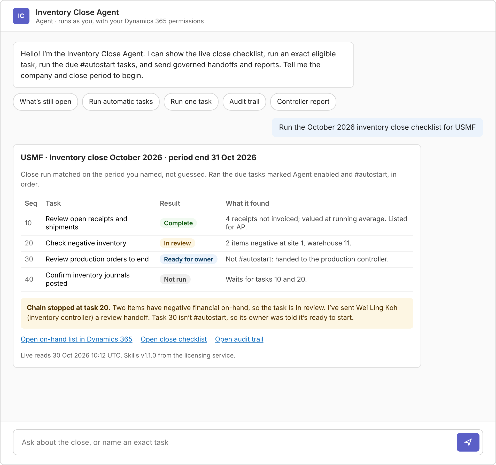
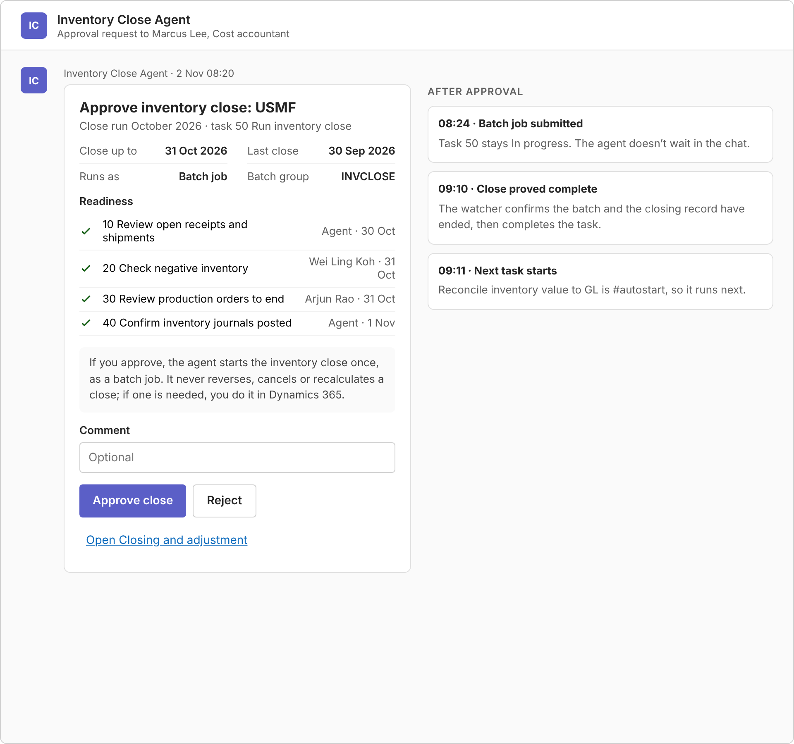
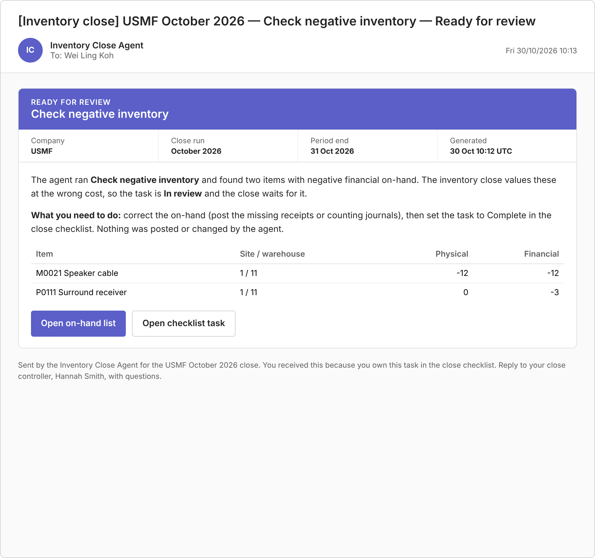
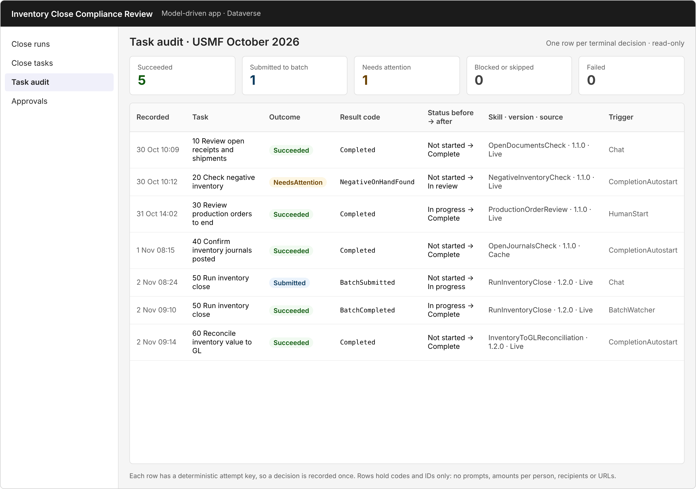

One architecture and one way of working for building AI agents across Finance & Supply Chain, Business Central, Sales, Customer Service and any Dataverse solution. Based on the patterns in Microsoft's FastTrack AI ERP agent templates.
Every D365 agent is a brain that is woken up by a trigger, looks things up and acts through tools, remembers its work in Dataverse, and asks a person before doing anything risky.
Work flows down from the top. The platform layer governs the agent and tool layers.
All the FastTrack agents follow this sequence. The Sales Order Agent is a good example: an email with a PDF becomes a sales order in D365.
Why a work-item table with a status? A status change restarts the agent at the right step, a review app shows every item, and every decision leaves an audit row. This is the single most reusable idea in the FastTrack samples.
| Application | Read | Write / business logic | Trigger the agent |
|---|---|---|---|
| Finance & Supply Chain | Dynamics 365 ERP MCP, Fin & Ops connector (OData), virtual tables | ERP MCP data, form and action tools; agent flow calling an OData action or custom X++ service | Business events, data events, schedule |
| Business Central | Business Central MCP server (read-only by default), BC connector | MCP configuration with create, modify and action permissions; AL custom APIs | BC connector triggers, webhooks, schedule |
| Sales · Service · Field Service | Dataverse MCP, Dataverse connector, Dataverse knowledge | Dataverse MCP or connector; Custom APIs | Row added, modified or deleted |
| Any Power Platform solution | Dataverse, SharePoint, any connector | Agent flows, custom connectors | Any Power Automate trigger |
Rule of thumb. Use the app's MCP server for reading and for actions a user confirms in chat. Use agent flows for autonomous writes that must run the same way every time and be audited.
Start one level lower than the business asks for, then move up as evaluation results prove accuracy.
Typical effort for a first agent. Later agents reuse components and go faster.
Credit Hold Review Agent reviews sales orders on credit hold in D365 Finance, adds customer context from Dataverse, recommends release or keep, and gets a credit manager's approval.
The same pattern (find exceptions, build the case, recommend, approve, act, log) fits invoice mismatches, requisition reviews, SLA escalations and blocked customers in Business Central.
For processes with many steps, the Period Close Agent pattern applies. This agent runs the month-end inventory close checklist in Supply Chain Management: open documents, negative inventory, production orders, journals, the inventory close itself, and the inventory-to-GL reconciliation.
Nobody opens Copilot Studio. People meet the agent in Teams or Microsoft 365 Copilot chat, an approval card, an email and one review app, while Dynamics 365 stays the system of record. Design mock-ups with example data from the USMF demo company; select a screen to see it full size.







If someone today notices something in Dynamics 365, looks up facts on several screens, judges them against a written rule, asks someone to approve, acts and tells others, an agent can do most of that work. The person keeps the decision.
Check Microsoft first. Microsoft ships its own agents in Finance, Supply Chain, Sales, Customer Service and Business Central. The best use cases extend them or fill the gaps between them. Every new agent starts by recommending, and earns the right to act once it has proved accurate.
Microsoft charges Copilot Studio by the step: about 5 credits each time the agent itself acts, and about 0.13 for each step inside an automated flow. So who does the routine work decides most of the Microsoft bill. Both designs make the same decisions, with the same approvals and audit trail.
Automations find new work, read the data and record results. The AI steps in only to judge and explain.
The agent checks for work itself and looks up each fact one by one, deciding what else to read.
| What matters to you | Lean | Flexible |
|---|---|---|
| Monthly Microsoft usage | Lower, and steadier month to month | Higher; varies with how much the agent looks up |
| Handling unusual cases | Uses the facts it was built to read; adding one is a small flow change | Can decide to look further on its own |
| Changing the process | Rule changes go through a tested release | Many changes are a text edit |
| Control and audit | Checks run in fixed flows that can't be skipped | Same approvals and audit; more relies on the agent's instructions |
| After a D365 update | A renamed field needs a quick flow fix | Usually adapts by itself |
Our default is Lean for processes that run every day at volume. We use Flexible for pilots, low volumes, or when you want the agent to investigate on its own, and you can switch an agent later without changing your subscription. Figures are Microsoft Copilot credits at about US$0.01 each, excluding your subscription, and are confirmed by measuring a validation run on your data before you commit.